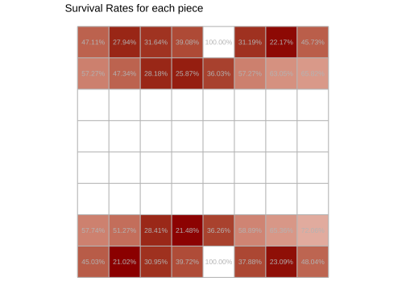

There are nice visualizations from chess data: piece movement, piece survaviliy, square usage by player, etc. Sadly not always the authors shows the code/data for replicate the final result. So I wrote some code to show how to do some this great visualizations entirely in R. Just for fun.
The Data
The original data come from here which was parsed and stored in the rchess package.
# A tibble: 3 × 2
event n
<chr> <int>
1 FIDE World Cup 2011 398
2 FIDE World Cup 2013 435
3 FIDE World Cup 2015 433
Code
chesswc<-chesswc%>%filter(event=="FIDE World Cup 2015")
The most important variable here is the pgn game. This pgn is a long string which represent the game. However this format is not so visualization friendly. That’s why I implemented the history_detail() method for a Chess object. Let’s check.
# A tibble: 178 × 8
piece from to number_move piece_number_move status number_move_capture
<chr> <chr> <chr> <int> <int> <chr> <int>
1 d2 Pawn d2 d4 1 1 <NA> NA
2 g8 Knig… g8 f6 2 1 <NA> NA
3 c2 Pawn c2 c4 3 1 game … NA
4 e7 Pawn e7 e6 4 1 <NA> NA
5 b1 Knig… b1 c3 5 1 captu… 12
6 f8 Bish… f8 b4 6 1 <NA> NA
7 g1 Knig… g1 f3 7 1 <NA> NA
8 b7 Pawn b7 b6 8 1 game … NA
9 g2 Pawn g2 g3 9 1 <NA> NA
10 c8 Bish… c8 b7 10 1 <NA> NA
# ℹ 168 more rows
# ℹ 1 more variable: captured_by <chr>
The result is a dataframe where each row is a piece’s movement showing explicitly the cells where the travel in a particular number move. Now we apply this function over the 433 games in the FIDE World Cup 2015.
The dfmoves data frame will be the heart from all these plots due have a lot of information and it is easy to consume.
Piece Movements
To try replicate the result it’s necessary the data to represent (and then plot) the board. In the rchess package there are some helper functions like chessboardata().
Code
dfboard<-rchess:::.chessboarddata()%>%select(cell, col, row, x, y, cc)dfboard
# A tibble: 64 × 6
cell col row x y cc
<chr> <chr> <int> <int> <int> <chr>
1 a1 a 1 1 1 b
2 b1 b 1 2 1 w
3 c1 c 1 3 1 b
4 d1 d 1 4 1 w
5 e1 e 1 5 1 b
6 f1 f 1 6 1 w
7 g1 g 1 7 1 b
8 h1 h 1 8 1 w
9 a2 a 2 1 2 w
10 b2 b 2 2 2 b
# ℹ 54 more rows
Now we add this information to the dfmoves data frame and calculates some field to to know how to draw the curves (see here for more details).
The data is ready! So we need now some ggplot, geom_tile for the board, the new geom_curve to represent the piece’s path and some jitter to make this more artistic. Let’s plot the f1 Bishop’s movements.
Code
pieces<-"f1 Bishop"dfpaths_piece<-dfpaths%>%filter(piece==pieces)ggplot()+geom_tile(data =dfboard, aes(x, y, fill =cc))+geom_curve( data =dfpaths_piece%>%filter(x_gt_y_equal_xy_sign),aes( x =x.from, y =y.from, xend =x.to, yend =y.to), position =position_jitter(width =0.2, height =0.2), curvature =0.50, angle =-45, alpha =0.02, color ="white", size =1.05)+geom_curve( data =dfpaths_piece%>%filter(!x_gt_y_equal_xy_sign),aes( x =x.from, y =y.from, xend =x.to, yend =y.to), position =position_jitter(width =0.2, height =0.2), curvature =-0.50, angle =45, alpha =0.02, color ="white", size =1.05)+scale_fill_manual(values =c("gray10", "gray20"))+ggtitle("f1 Bishop")+coord_equal()
In the same way we can plot every piece.
Code
pieces<-c("White Queen","h1 Rook","b8 Knight","g2 Pawn","c1 Bishop","f7 Pawn")dfpaths_pieces<-dfpaths%>%filter(piece%in%pieces)ggplot()+geom_tile(data =dfboard, aes(x, y, fill =cc))+geom_curve( data =dfpaths_pieces%>%filter(x_gt_y_equal_xy_sign),aes( x =x.from, y =y.from, xend =x.to, yend =y.to), position =position_jitter(width =0.2, height =0.2), curvature =0.50, angle =-45, alpha =0.02, color ="white", size =1.05)+geom_curve( data =dfpaths_pieces%>%filter(!x_gt_y_equal_xy_sign),aes( x =x.from, y =y.from, xend =x.to, yend =y.to), position =position_jitter(width =0.2, height =0.2), curvature =-0.50, angle =45, alpha =0.02, color ="white", size =1.05)+scale_fill_manual(values =c("gray10", "gray20"))+coord_equal()+facet_wrap(vars(piece), ncol =3)
I think it’s look very nice and similar to the original work made by Steve Tung.
Survival Rates
In this plot we need filter dfmoves by !is.na(status) so we can know what happend with every piece in at the end of the game: if a piece was caputered of or not. Then get summary across all the games.
This helps as validation because the kings are never captured. Now we use a helper function in the rchess package rchess:::.chesspiecedata() to get the start position for every piece and then plot the survival rates in the cell where the piece start in the game.
Code
dfsurvrates<-dfsurvrates%>%left_join(rchess:::.chesspiecedata()%>%select(start_position, piece =name, color, unicode), by ="piece")%>%full_join(dfboard%>%rename(start_position =cell), by ="start_position")# Auxiliar data to plot the boarddfboard2<-data_frame(x =0:8+0.5, y =0+0.5, xend =0:8+0.5, yend =8+0.5)ggplot(dfsurvrates)+geom_tile(data =dfsurvrates%>%filter(!is.na(surv_rate)),aes(x, y, fill =surv_rate))+scale_fill_gradient(low ="darkred", high ="white")+geom_text(data =dfsurvrates%>%filter(!is.na(surv_rate)),aes(x, y, label =scales::percent(surv_rate)), color ="gray70", size =3)+scale_x_continuous(breaks =1:8, labels =letters[1:8])+scale_y_continuous(breaks =1:8, labels =1:8)+geom_segment(data =dfboard2, aes(x, y, xend =xend, yend =yend), color ="gray70")+geom_segment(data =dfboard2, aes(y, x, xend =yend, yend =xend), color ="gray70")+ggtitle("Survival Rates for each piece")+coord_equal()+theme(legend.position ="none")

Obviously the plot show same data in text and color, and there a lot of space without information but the idea is use the chess board to represent the initial position in a chess game.
For this visualization we will use the to variable. First of all we select the player who have more games in the table chesswc. Then for each of them get the to counts.
Notice the similarities between the White King and h1 Rook due the castling, the same effect is present between the Black King and the h8 Rook.
Who Captures Whom
For this plot we’ll use the igraph package and ForceAtlas2 package an R implementation by Adolfo Alvarez of the Force Atlas 2 graph layout designed for Gephi.
We get the rows with status == "captured" and summarize by piece and captured_by variables. The result data frame will be the edges in our igraph object using the graph.data.frame function.
It’s know we usually exchange pieces with the same values: queen by queen, knight by bishop, etc. The interesting fact we see here is the d2 pawn/c7 pawn/g1 knight relationship because d2 pawn/c7 pawn is not so symmetrical and it’s explained by the popular use the Sicilian Opening in a master level (1.e4 c5 2.Nf3 d6 3.d4 cxd4 4.Nxd4).
I hope you enjoyed this post in the same way I enjoyed doing it :D. If you notice a mistake please let me know.